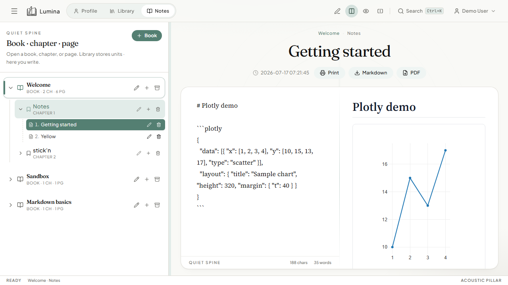

Organize your thoughts.Keep them on your server.
Markdown notebooks with Mermaid, Plotly, desktop stickies, and sync you host yourself. Shelves, books, chapters, and pages — not one long scratch file.

In the notebook
The same tools as the app, without signing in to someone else's cloud.